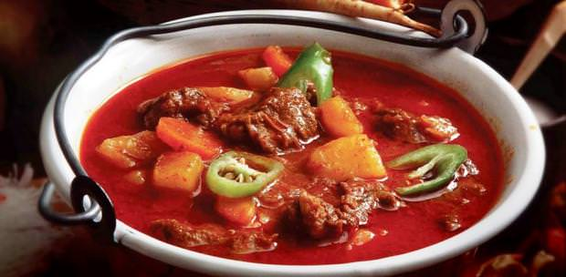

Traditional Gulyásleves (Goulash)

Description
Most famous Hungarian dish.
Ingredients
- 60 dkg/1.3 lbs beef shank
- 30 dkg/0.66 lbs onion
- 2 carrot
- 1 parsnip
- 1 small celery
- 40 dkg/0.88 lbs peeled potato
- 1 tbsp sweet ground red pepper
- 0.5 tbsp spicy ground red pepper
- 1 tbsp salt
- 1 tbsp ground cumin
- 2 bay leaves
- 1 tsp ground black pepper
- 1 small tomato
- 1 Hungarian pepper (tv paprika)
- 3 clove garlic
- 2 tbsp pork lard
- 2.5 l/33.8 oz water